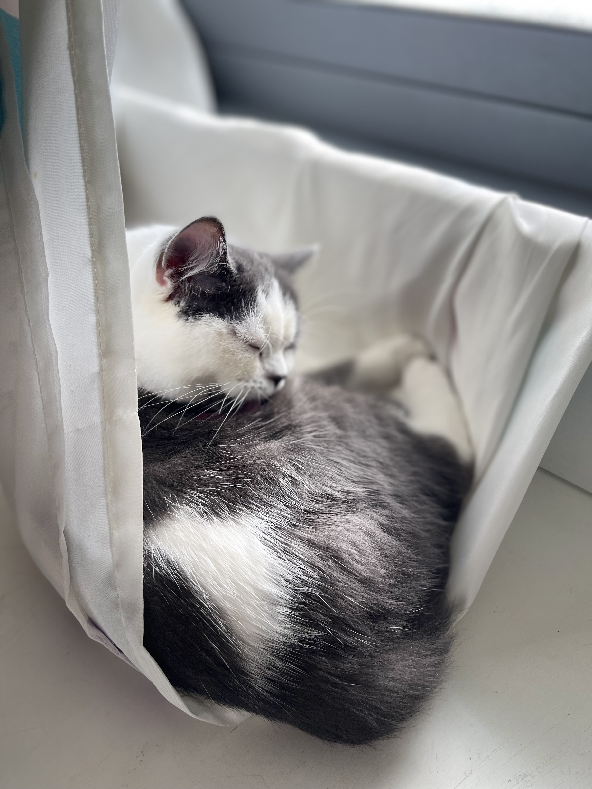

<p>My name is Sham Tafsha, I am 14 years old. My goal at first was to learn Python, then I switched it to website programming after talking with someone who has a grate experience in the field, who advised me to start learning it .
     I do not have previous experience in the field, but I do have very little experience in Python.
      My motivation for learning programming is very simple, which is my great passion for this field.
       I hope that I will benefit from the course and be able to design a website that benefits my community</p>

